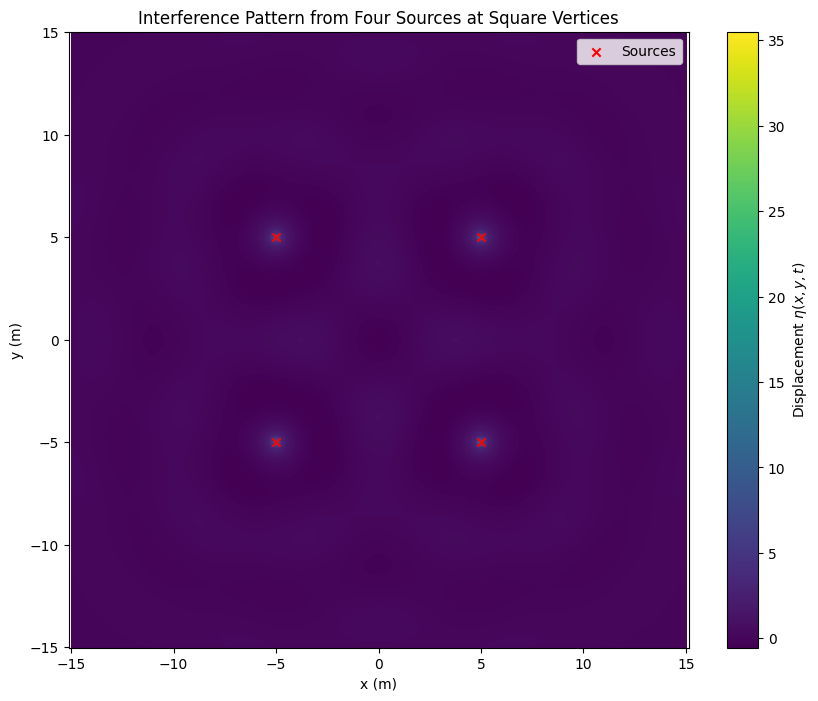
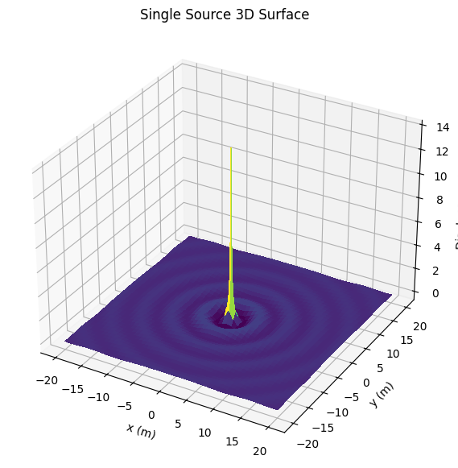
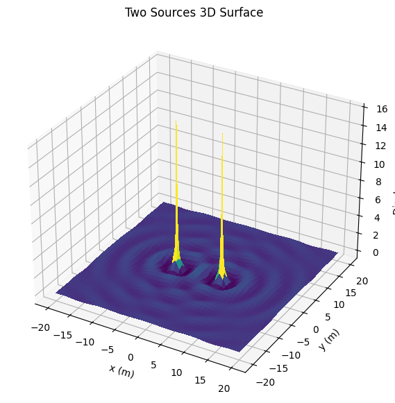
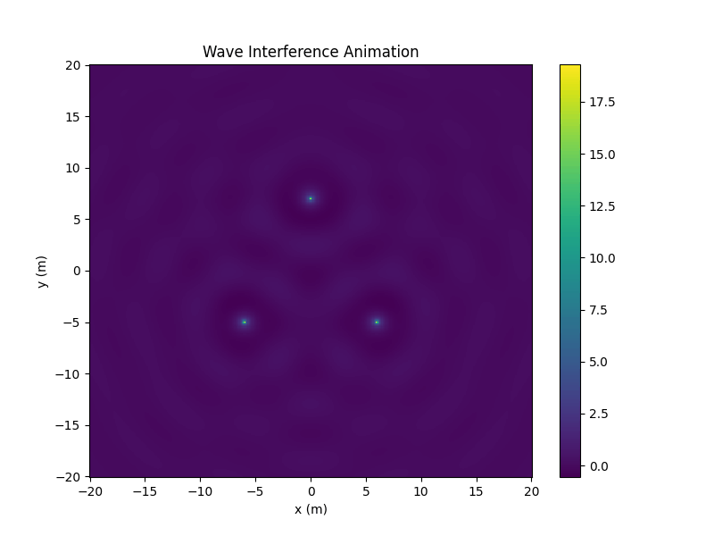

Problem 1
Interference Patterns on a Water Surface
1. Introduction
We study the interference of waves generated from multiple point sources arranged at the vertices of a regular polygon. Each source emits circular waves, and the principle of superposition is used to find the overall displacement on the surface.
2. Polygon Selection
We choose a square (regular quadrilateral) for simplicity.
Thus, 4 sources are placed at the vertices of a square.
3. Mathematical Model
A single wave from a source at \((x_0, y_0)\) is:
where:
\(A\) is the amplitude, and \(\phi\) is the initial phase (we can set \(\phi = 0\) for simplicity).
The total displacement is:
4. Simulation Setup
All sources have the same \(A\), \(\lambda\), and \(f\).
The square is centered at the origin, with vertices at:
- \((d, d)\)
- \((-d, d)\)
- \((-d, -d)\)
- \((d, -d)\)
We will simulate the water surface over a grid in \((x,y)\) space.
5. Python Code
# Import necessary libraries
import numpy as np
import matplotlib.pyplot as plt
# Wave parameters
A = 1.0 # Amplitude
wavelength = 5.0 # Wavelength (lambda)
frequency = 1.0 # Frequency (Hz)
k = 2 * np.pi / wavelength # Wave number
omega = 2 * np.pi * frequency # Angular frequency
phi = 0 # Phase
d = 5.0 # Half-length of square side (distance from center to vertex)
# Time at which to evaluate
t = 0.0
# Grid setup
x = np.linspace(-15, 15, 500)
y = np.linspace(-15, 15, 500)
X, Y = np.meshgrid(x, y)
# Source positions (square vertices)
sources = [
(d, d),
(-d, d),
(-d, -d),
(d, -d)
]
# Calculate total displacement
eta_sum = np.zeros_like(X)
for (x0, y0) in sources:
r = np.sqrt((X - x0)**2 + (Y - y0)**2) + 1e-6 # Add small term to avoid division by zero
eta = (A / r) * np.cos(k * r - omega * t + phi)
eta_sum += eta
# Plotting
plt.figure(figsize=(10, 8))
plt.pcolormesh(X, Y, eta_sum, shading='auto', cmap='viridis')
plt.colorbar(label='Displacement $\eta(x,y,t)$')
plt.title('Interference Pattern from Four Sources at Square Vertices')
plt.xlabel('x (m)')
plt.ylabel('y (m)')
plt.scatter(*zip(*sources), color='red', marker='x', label='Sources')
plt.legend()
plt.axis('equal')
plt.show()

6. Analysis of Interference Patterns
Constructive Interference:
Occurs where the waves from all sources arrive in phase (crest meets crest). These appear as bright regions on the plot.
Destructive Interference:
Occurs where waves are out of phase (crest meets trough), leading to cancellation. These appear as dark regions.
Pattern Symmetry:
Since the sources are symmetrically placed (square), the interference pattern is symmetric about the \(x\) and \(y\) axes.
Radial Effects:
Close to each source, circular patterns dominate. Farther away, the patterns become more complex due to interaction of multiple wavefronts.
7. Possible Extensions
- Animate the pattern over time to visualize how the interference evolves dynamically.
- Try other polygons (triangle, pentagon, hexagon) and compare the resulting patterns.
- Introduce slight phase differences between the sources and study how the interference pattern changes.


